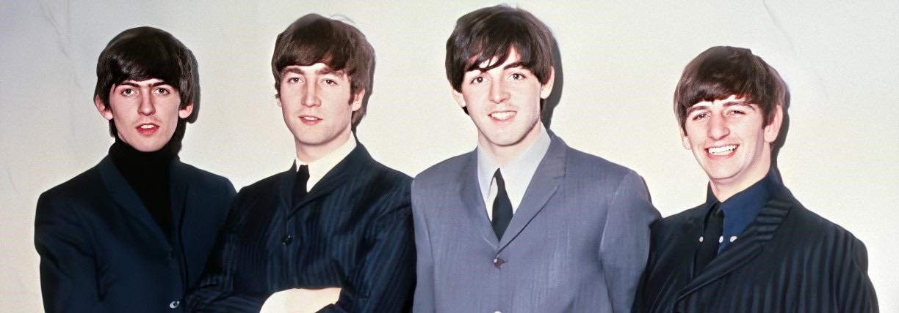
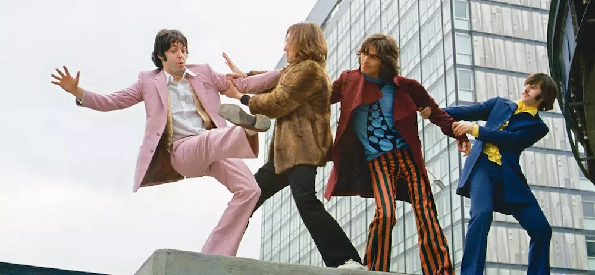

The Early Years: 1963-1966
Since a lot of people my age might not be as familiar with the band I'll some time to give a very short history of the band. The Beatles were formed in 1960 in Liverpool, England from the remnants of John, Paul, and George's previous band The Quarrymen. For the first three years the band was together hey played in small clubs across Europe; most famously the cavern club in london and the star club in Hamburg, Germany before they were discovered by their future manager Brian Epstein. With his help they eventually got signed to Parlaphone Records in 1962 by Producer George Martin. Around this time Ringo Starr would join the band as their drummer and they would begin releasing albums starting with Please Please Me in 1963. Their fame quickly rose across Europe and by 1964 They were a global sensation the likes of which the world had never seen. However by 1966 The beatles were getting pretty fed with the spotlight. The crowds were so rabid at their shows that the members stopped being able to hear their own instruments which led to the quality of their performances degrading as time went on. On top of that they started to feel creatively hindered by having to restrict their songwriting to whatever instruments they could carry on stage with them (live music infrastructer wasn't as robust as it is today). So at the end of 1966 The Beatles announced they would be retiring from playing live and focus solely on recording music in the studio. Many music historians mark this as the moment that seperates the the first and second halves of the band's career.
Highlights From This Era
- I Saw Her Standing There - Please Please Me (1963)
- I Feel Fine - Non-album single (1964)
- You've Got To Hide Your Love Away - Help! (1965)
- If I Needed Someone - Rubber Soul (1965)
- Tomorrow Never Knows - Revolver (1966)

The Later Years: 1967-1970
After their retirement from touring The Beatles took their new found freedom and went completely wild in the studio. Only about six months later they would release Sgt. Pepper's Lonely Hearts Club Band; what many consider to be the band's magnum opus and one of the greatest albums of all time. The musical experimentation that the band indulged in over the next three years revolutionized the musical landscape as we know it. Today many credit songs from this era as laying the groundwork for genres such as punk, metal, and art rock. However with so many strong willed creative minds in one band it was inevitable that the members would start pulling away from each other and by 1969 all four members were pretty tired of each other. John was more interested in making avant garde music with his new wife Yoko Ono, George was tired of having his songs suppressed in favor of more Paul and John songs, and Paul in his attempts to try in keep the band together and focused just came off as a bossy perfectionist to the rest of the group. After about two years of tention the dam finally broke and the band broke up officially in 1970. All four went on to have succesful solo careers throughout the 70's and Paul even maintaned his success into the early 80's.
Highlights from this era
- Strawberry Fields Forever - Non-album single (1967)
- Being For The Benefit Of Mr. Kite! - Sgt. Pepper's Lonely Hearts Club Band (1967)
- Helter Skelter - The Beatles (1968)
- I Want You (She's So Heavy) - Abbey Road (1969)
- Don't Let Me Down - Non-album single (1969)